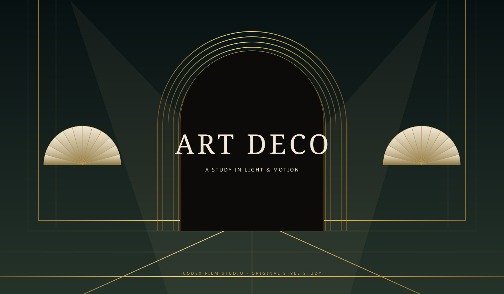

Give light an edge.
Thin metallic highlights trace hard planes. Warm ivory and skin keep their light; local glows give lamps their own presence.
Every edge, illuminated.
Every movement, composed.
Black lacquer. Sculpted brass. A world of stepped arches, expressive figures and light that moves to its own rhythm.
Enter the study ↓
An original, silent material study using the reusable Art Deco drawing toolkit. Explore its visual language, then give it a story of your own.
02 / THE VISUAL LANGUAGE
Decoration becomes storytelling when a door reveals a space, a glint draws the eye, and a small gesture changes the scene.
#0D0B09#C9A24B#F2E8D5#8E1B2E#1D6B57Thin metallic highlights trace hard planes. Warm ivory and skin keep their light; local glows give lamps their own presence.
Stepped arches, chevrons and fan shapes belong to rooms and objects. Foreground and background travel at different speeds.
Faceted faces, fitted clothing and articulated hands carry the action. Anticipation, contact and release make a gesture legible.
Piano, clarinet, strings and muted brass leave room for narration. Steps, switches and impacts land on the same frame clock.
03 / YOUR TURN TO DIRECT
Start with the materials and figure toolkit. Bring a subject, an audience and a running time; build your own scenes, voice and score.
Clone the library, then open the folder in Codex.
git clone https://github.com/visiontrail/codex-film-studio.git
cd codex-film-studioCreate an independent project outside the library.
python3 scripts/new_film.py my-film --style art-decoOpen the new project. Develop the storyboard, stage the physical action, and refine picture and sound together.
Read the style guide ↗START A CONVERSATION IN CODEX
Create a three-minute vertical Art Deco film about a subject I provide. Use black lacquer, graded brass, warm faceted figures and stepped architecture. Build clear physical actions and spatial camera moves, with original jazz and English narration. Keep image, voice and captions on one timeline, then inspect and refine the result.Open the reusable prompt ↗
Included: drawing materials, articulated figures, camera helpers and a blank film contract. Each new film needs its own scene renderer, story and soundtrack. The interactive study is a style demonstration; no finished film is published on this page.
04 / INSIDE THE STUDIO
Camera and lighting run at 24 fps. Slower character motion can use 12 pose updates per second; quick gestures need consecutive 24 fps poses.
A portrait film needs a new composition. Fit the full gesture and fan envelopes, preserve foot contact, and keep captions inside safe areas.
Inspect hands, faces, occlusion and cut boundaries, then review normal-speed playback and audio separately. An attractive still is one part of the film.
05 / INSPIRATION & CREDITS
The visual reference is LemoLab’s Midnight at the Starlight Hotel, from lemo-opuscar (CC BY 4.0). This page’s study and drawing toolkit are independently authored. The reference’s story, score and animation code are not included.
Limelight by Sorkin Type Co and Josefin Sans by the Josefin Sans Project Authors. Font files are hosted here under the SIL Open Font License.